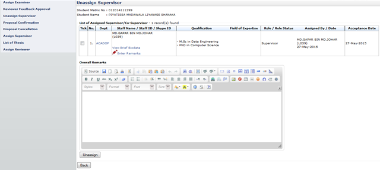

Figure 14: Unassign Supervisor/Co-Supervisor Page
Steps:-
- To view brief supervisor/co-supervisor biodata click (refer view brief biodata)
- To give remark to the supervisor/co-supervisor click (refer enter remarks)
- To give an overall remarks , enter necessary remarks into textarea displayed.
- Tick on the check box on the far left side column. Then click Unassign button to proceed.
Created with the Personal Edition of HelpNDoc: Free help authoring environment